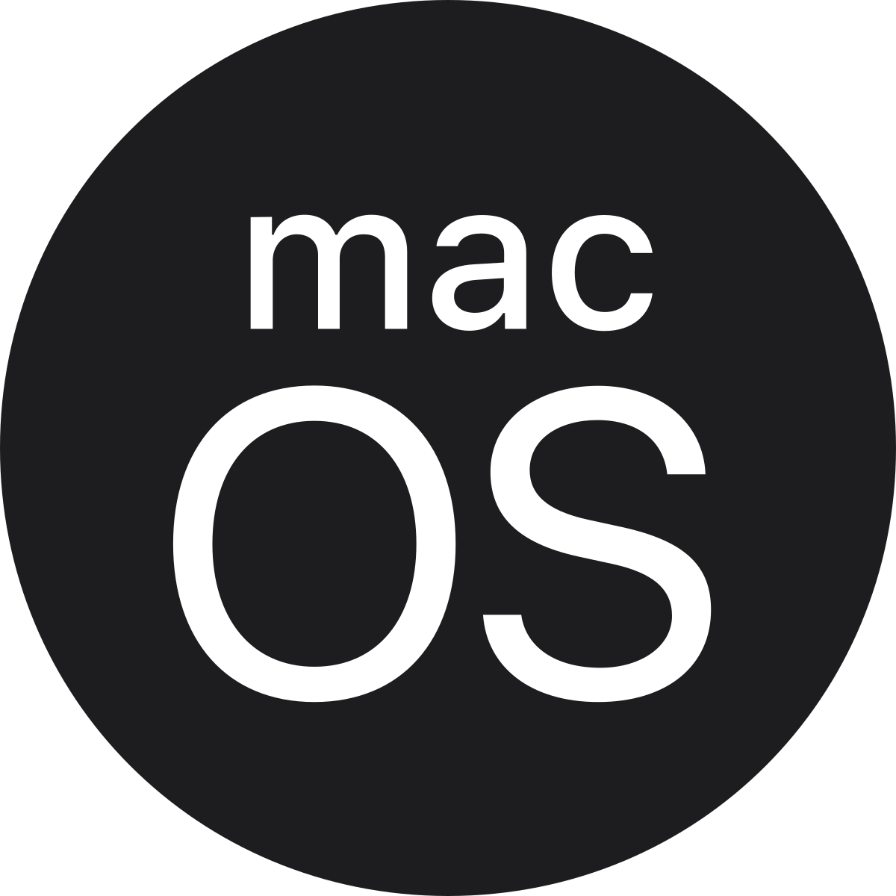

X
• Licenciamento e Custos
• Interface do usuário
• Suporte de software e ecossistema
• Gerenciamento de usuários e permissões
• Suporte a comunidade
X
• Licenciamento e Custos
• Interface do usuário
• Suporte de software e ecossistema
• Gerenciamento de usuários e permissões
• Suporte a comunidade
Em resumo, o macOS e o Ubuntu Server são muito diferentes em termos de objetivo e uso, e a escolha de qual sistema usar depende do que a empresa ou o indivíduo precisa. O macOS é ideal para usuários finais que necessitam de uma interface gráfica amigável e software para criação digital, enquanto o Ubuntu Server é mais adequado para servidores e infraestruturas de TI, com foco em nuvem, virtualização e contenedores. Ambos os sistemas têm suas forças, mas são voltados para necessidades e públicos-alvo diferentes.
Windows Server é a escolha ideal para empresas que dependem de soluções Microsoft, possuem aplicativos legados ou necessitam de uma interface gráfica para gerenciar servidores. Ubuntu Server é preferido por empresas de tecnologia, startups, e infraestruturas em nuvem que buscam flexibilidade, baixo custo, e uma plataforma otimizada para open source e tecnologias como containers.